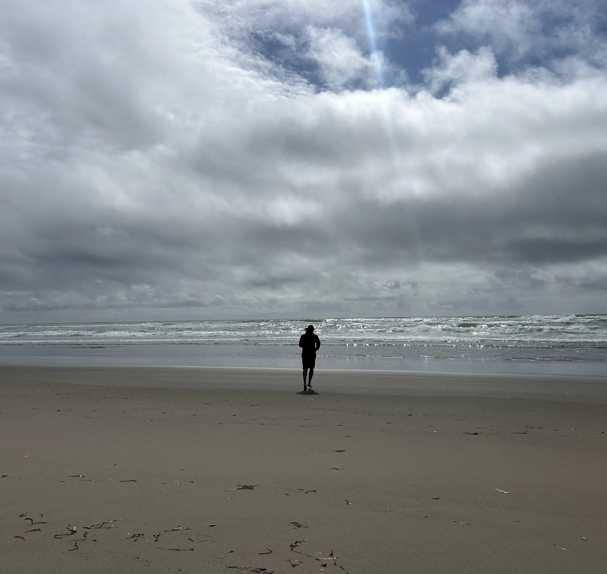
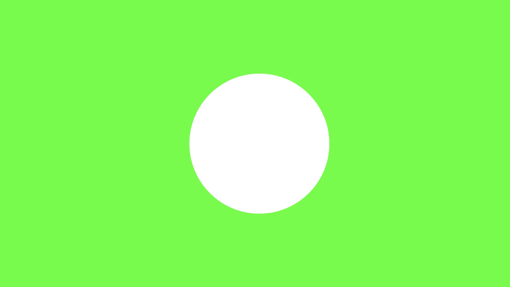
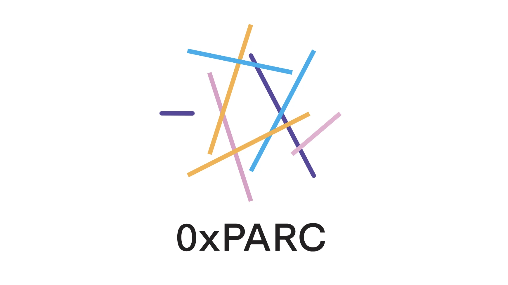

Tay Aras is a designer, builder, and musician. His work explores connection: how we can bring people closer to each other, and to the things they care about.
At Microsoft, he builds virtual communication experiences and multimodal sharing products. He also runs Nowhere Interesting, an independent design studio and creative lab working with artists, musicians, and startups.
More about me →

Runs an independent design studio and creative lab, developing products, identities, and websites for artists, musicians, and startups alongside self-initiated experiments.
Visit site ↗Worked with the founder on product vision and long-term direction through design workshops and ongoing advisory.
Visit site ↗Led product and design workshops with the founder, exploring product concepts alongside brand and identity.
Visit site ↗
Advised on product direction and developed brand and website design for experimental, unreleased technologies.
Visit site ↗Co-designed a wall-speaker concept for people living apart, turning shared songs and reactions into light patterns that keep their exchanges visible at home.
View project →